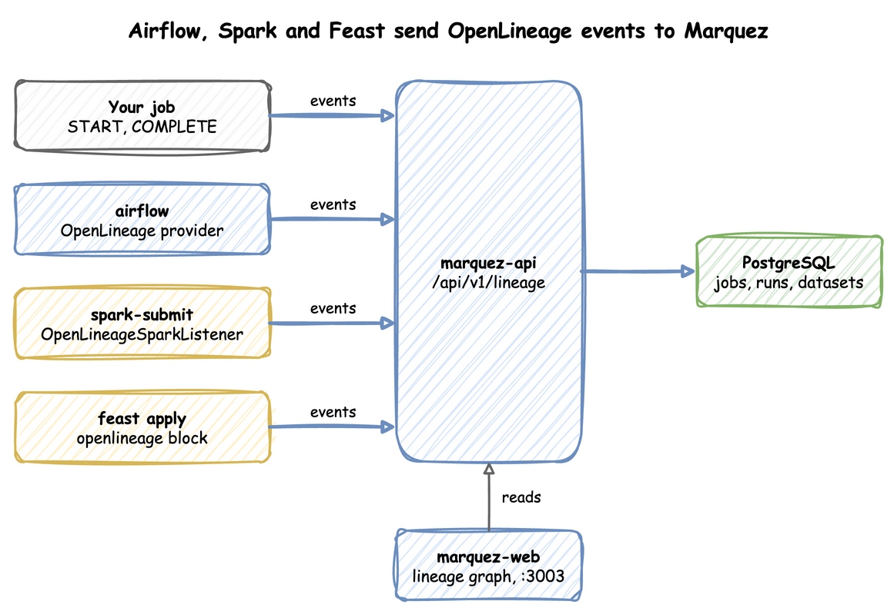
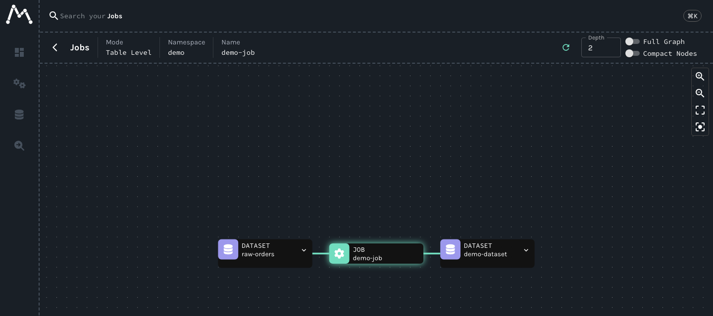
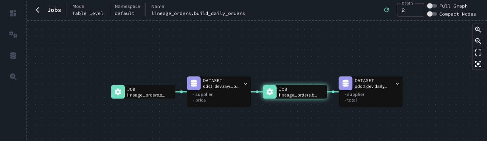

OpenLineage and Marquez
The lineage profile runs Marquez. Marquez has an API that receives OpenLineage events and keeps jobs, runs and datasets on PostgreSQL, and a web UI that draws the lineage graph. OpenLineage is an open standard for events that say which job read and wrote which datasets in each run.
Anything that sends OpenLineage events over HTTP can report to Marquez. A section below sets up each of Airflow, a Spark job and feast apply.
The end-to-end tests run the commands below on every release. They skip the up commands and the .env edit, because the workflow starts each profile itself and sets the transport in its shell.
This guide builds on Getting Started.
Your job, Airflow, Spark and Feast send their events to marquez-api, and marquez-web reads the API to draw the graph:

Start the profile:
| docs/snippets/lineage/commands.sh:up | |
|---|---|
| Endpoint | Address |
|---|---|
| Marquez API from the host | http://127.0.0.1:5002 |
Marquez API inside the odctl network |
http://marquez-api:5000 |
| Lineage graph UI | http://127.0.0.1:3003 |
Send OpenLineage Events
A run is reported as a START event and a COMPLETE event with the same run id. The job reads one dataset and writes another:
The run id is a UUID, as OpenLineage requires. Each request prints nothing when Marquez accepts the event.
Read the Lineage Back
These read the namespaces, the job and the output dataset back from the API:
| docs/snippets/lineage/commands.sh:read | |
|---|---|
Marquez writes the job, the run and the dataset from the events, so all three read back. The first command lists the namespaces, which include demo. The second returns the job demo-job as JSON, with raw-orders among its inputs, demo-dataset among its outputs and a latestRun in state COMPLETED. The third returns the dataset. The UI shows them under the demo namespace.
The UI draws the job between the datasets it read and wrote:

Lineage from Airflow
The airflow image includes Airflow's OpenLineage provider. It sends a START event and a COMPLETE event for each DAG run and each task, and for a SQL task it reads the tables from the SQL. It sends events only when it has a transport, which is the setting that says where to send them. odctl leaves the transport empty, so with no change Airflow sends nothing and logs no error. This section builds on Airflow DAGs from S3, which explains how to upload and run a DAG.
Set the transport in the .env key AIRFLOW_OPENLINEAGE_TRANSPORT. Its value is JSON: type is http, and url is the address of marquez-api inside the odctl network, from the table at the top of this page. sed -i.bak works with both GNU and macOS sed, and keeps the original as .env.bak. Run this in the folder that holds your .odctl workspace, then start Airflow:
| docs/snippets/lineage/commands.sh:airflow-env | |
|---|---|
| docs/snippets/lineage/commands.sh:airflow-up | |
|---|---|
If Airflow is already running, run odctl recreate airflow instead, because a restart does not read .env again, as Apply a Change explains.
The DAG has two tasks that run SQL on the odctl database of the postgres service. The first creates raw_orders, and the second builds daily_orders from it. Both tables are in the dev schema. The odctl database looks in cdc first, so the SQL names dev. Save it as lineage_orders.py:
The provider parses each statement. The highlighted one gives build_daily_orders its datasets: it reads dev.raw_orders and writes dev.daily_orders. The tasks reach PostgreSQL through an Airflow connection, a stored address and login that a task names with conn_id. This adds the connection odctl_postgres, with the user and password of odctl's PostgreSQL:
| docs/snippets/lineage/commands.sh:airflow-connection | |
|---|---|
The command prints a few SyntaxWarning lines, then Successfully added `conn_id`=odctl_postgres and a table with the connection. The warnings do not affect the result. Copy the DAG into the Airflow container and upload it to s3://airflow/dags, as Airflow DAGs from S3 does:
| docs/snippets/lineage/commands.sh:airflow-upload | |
|---|---|
Airflow reads the bucket every 15 seconds, so the DAG appears in its list a short time after the upload. Wait until the first command lists it, then unpause the DAG and trigger a run:
| docs/snippets/lineage/commands.sh:airflow-run | |
|---|---|
The last command prints the new run in state queued. Airflow sends the events while the run executes, and the run takes a few seconds, so list the runs until the state is success with docker exec airflow airflow dags list-runs lineage_orders. Then read the jobs back. A namespace groups jobs and datasets in Marquez. This lists the jobs of one namespace from the same API that Read the Lineage Back uses, cut to each job's name and the datasets it read and wrote:
Airflow's provider names each job after the DAG and the task, and each dataset after the database, the schema and the table. Four more facts explain the output:
- Airflow puts its jobs in the namespace
default, whichAIRFLOW__OPENLINEAGE__NAMESPACEin.odctl/compose-orch.ymlchanges afterodctl recreate airflow. - Airflow gives each table the namespace
postgres://postgres:5432, the address of the database. - The DAG is a third job,
lineage_orders, with no datasets, so the read-back leaves it out. - The first task writes
raw_ordersand the second reads it, so the graph joins the two jobs through that table.
The UI draws the graph of the second task at http://127.0.0.1:3003/lineage/job/default/lineage_orders.build_daily_orders:

The graph runs from seed_raw_orders through the table raw_orders to build_daily_orders and daily_orders, because the second task reads the table the first one wrote.
Lineage from Spark
The OpenLineage Spark listener is a Spark listener, a class that Spark calls as a job runs. It sends the events with the datasets each statement read and wrote. The listener's jar is openlineage.jar in /mnt/shared-deps/spark. The Spark containers already put that folder on the classpath, so the job needs no --packages option. This section builds on Spark. Start the profile:
| docs/snippets/lineage/commands.sh:spark-up | |
|---|---|
spark-full works the same way, because it runs the same spark-master container.
Save this PySpark job as orders_job.py. It writes the Iceberg table raw_orders and then builds daily_orders from it:
The job has no lineage code. The listener reads each statement's plan, and the highlighted statement is the one that reads raw_orders and writes daily_orders. Copy the file into the master container and submit it with the listener's settings:
Each setting does one thing:
--driver-class-pathputsopenlineage.jarfirst on the driver's classpath, ahead of the other jars of the shared volume.spark.extraListenersnames the listener class, so Spark calls it for every statement.spark.openlineage.transport.typeandspark.openlineage.transport.urlsend the events over HTTP tomarquez-api.spark.openlineage.namespaceis the namespace of the jobs in Marquez.
The jar comes first because the OpenMetadata agent jar in the same folder holds a second copy of the listener's classes. With Spark's default classpath the driver loads that copy. The listener then fails with NoSuchMethodError, Spark stops the session, and the job fails. The --driver-class-path value repeats the classpath from spark/spark-defaults.conf in the workspace, with the jar in front.
The job prints Spark's usual log, with some OpenLineage warnings and one ContextFactory error line, and the events still reach Marquez. Spark sends them as each statement ends, so read the jobs of the namespace odctl back a few seconds after the job ends:
Spark reports one job for each statement that writes a table. The listener names each job after the application name, with - turned into _ (spark_orders), the kind of write and the table. The first line is the job that read raw_orders and wrote daily_orders. The listener names an Iceberg table by its place in the warehouse bucket, so the datasets are demo/raw_orders and demo/daily_orders in the namespace s3://warehouse. The application is a fifth job, spark_orders, with no datasets, so the read-back leaves it out.
Lineage from Feast
feast apply can send an event for the feature views it applies. It does so when the openlineage block of feature_store.yaml says enabled: true. The bundled repository of the feast profile has no such block, so Feast sends nothing until you add one.
The block needs the OpenLineage extra of the Feast client. The airflow image has it and the feast services do not, so this section runs feast apply in the airflow container, started in Lineage from Airflow. It builds on Feast with Iceberg, whose feature_repo/definitions.py it uses: save that file first if you have not. The feature view driver_stats is over the Iceberg table demo.driver_stats, and apply does not read the table.
Save this file as lineage_repo/feature_store.yaml. It differs from the Feast guide's file in three places: the project, lineage_demo, which keeps these feature views apart from the guide's project demo; the addresses, which are the container addresses because feast apply runs inside the odctl network; and the openlineage block:
transport_type and transport_url send the events over HTTP to marquez-api, and Feast adds the path api/v1/lineage itself. Without namespace, Feast uses the project name as the namespace. Run these from the folder that holds feature_repo and lineage_repo. Copy both files into the container and apply them. --skip-source-validation is the option that Feast with Iceberg explains:
| docs/snippets/lineage/commands.sh:feast-apply | |
|---|---|
The first line shows that the OpenLineage client is on. Read the jobs of the namespace lineage_demo, the project name, back:
Feast reports one job for the project's feature views. Its inputs are the entity driver and the data source, and its output is the feature view driver_stats. The source is named .demo.driver_stats because an IcebergSource with no name joins its warehouse, namespace and table, and the definitions pass an empty warehouse.
From Another Container
Inside the odctl network, send events to http://marquez-api:5000/api/v1/lineage. For an OpenLineage client's HTTP transport, set the URL to http://marquez-api:5000, because the transport adds api/v1/lineage by default.
Runnable Example
Save this file as example.sh and run it with bash example.sh in the folder that holds your .odctl workspace. It gives each run a new id, so it reports a new run every time:
It prints the new run's id and COMPLETED.